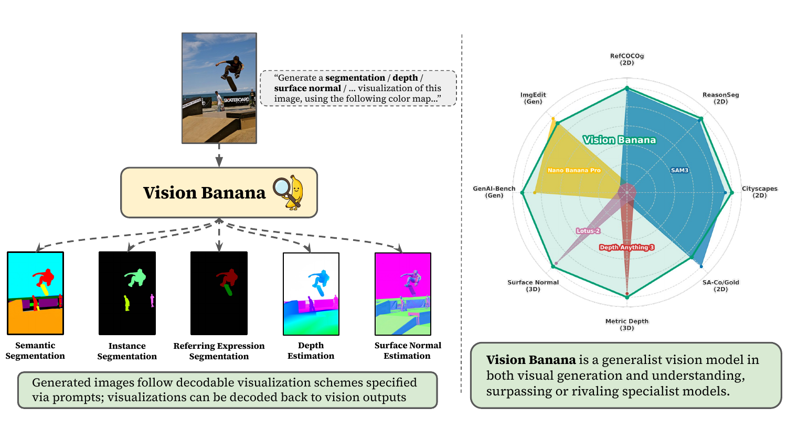
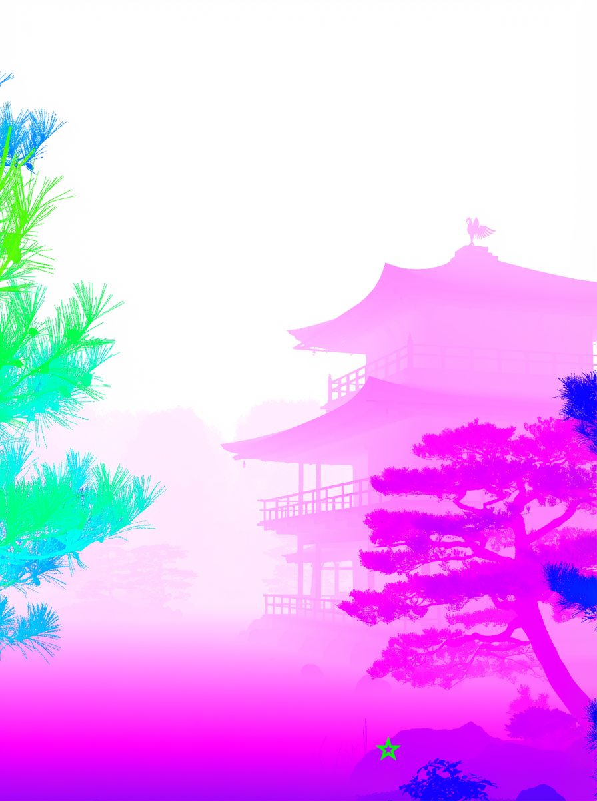
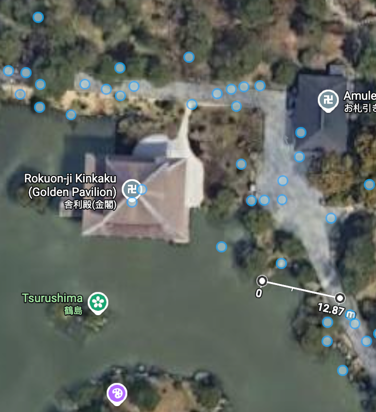
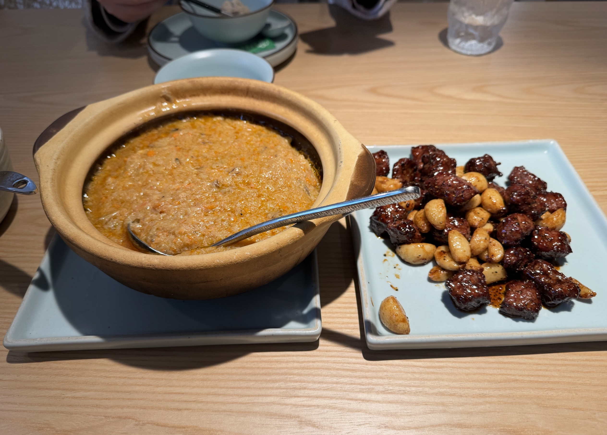
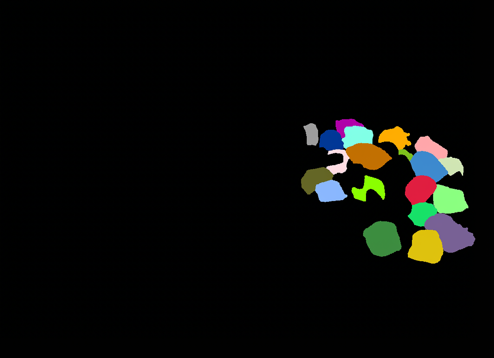
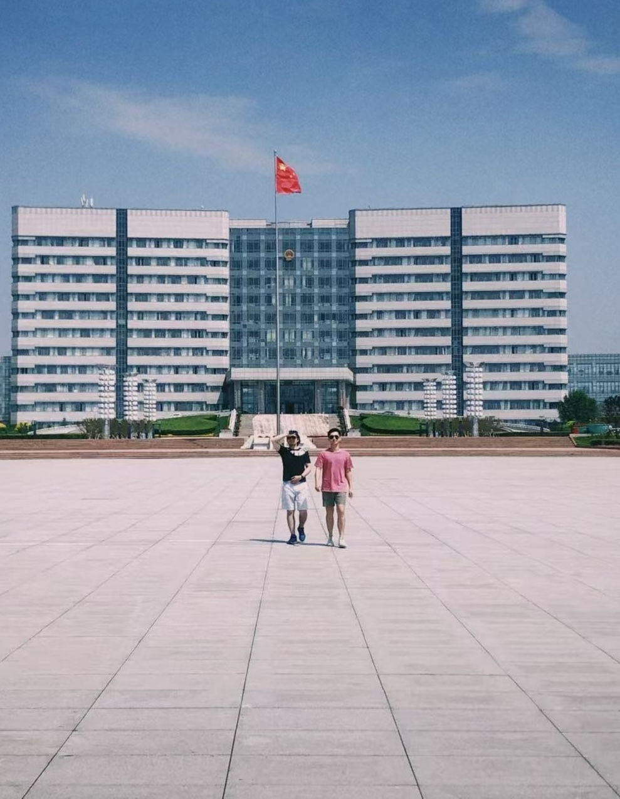
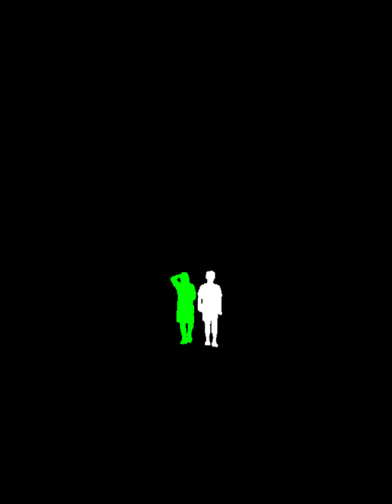
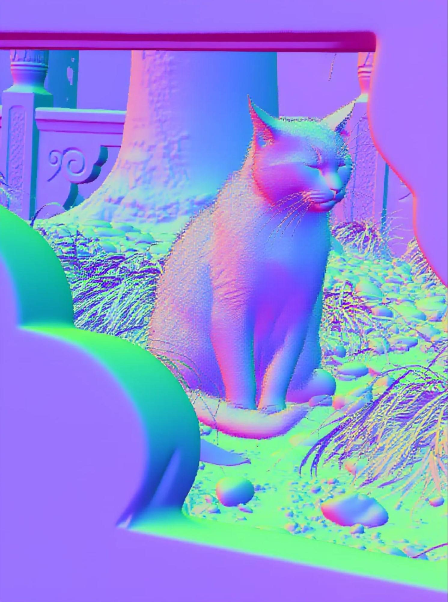
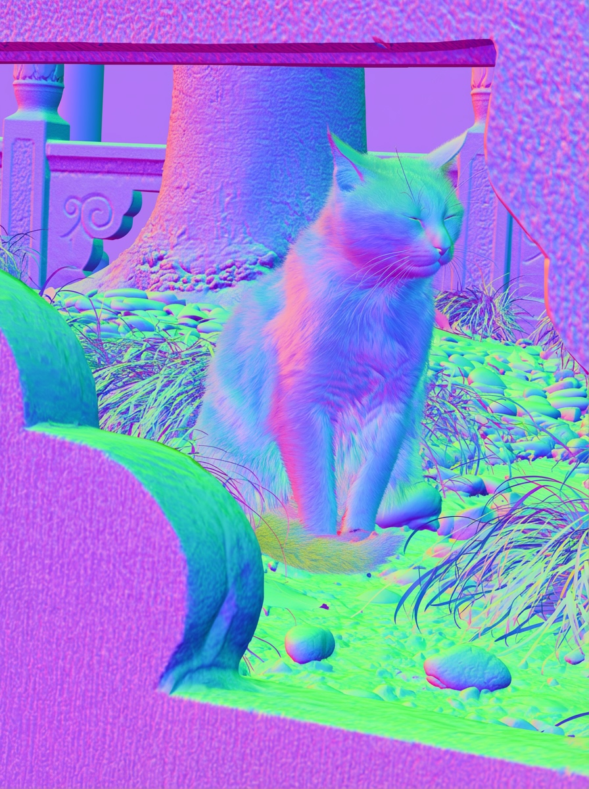

An interactive explainer
Image Generators are Generalist Vision Learners
Image generators look like one-trick ponies: type a prompt, get a picture. This paper argues they have been hiding a second skill the whole time — understanding images well enough to do depth estimation, segmentation, and surface normals at the level of, or better than, the world's best specialist models. The trick to unlocking it is almost embarrassingly simple.

Suppose I hand you a photo of a kitchen and ask: how far is each object from the camera? A specialist depth estimator like Depth Anything V3 has been trained for exactly this. An image generator like Nano Banana Pro hasn't — its job is to create kitchens, not measure them.
The Vision Banana paper makes a surprising claim: the image generator can answer the depth question better than the specialist, after a tiny bit of instruction-tuning. And the same model can also segment cats, label road scenes, estimate surface normals — every classic computer-vision task reframed as just generate the right kind of picture.
This post walks through how it works, why it works, and why the authors think we're in the middle of a paradigm shift for computer vision.
1. The LLM moment, for vision
Take a moment to remember what GPT-3 felt like in 2020. Researchers had been training language models to predict the next token — a generative task. Yet the resulting models could answer trivia, translate French, summarize legal documents, write Python, and follow instructions. The same training objective that taught them to generate had taught them to understand.
We have a default name for this now: generative pretraining. It is the foundation of nearly every capable text model on Earth.
Computer vision has gone in a different direction. The flagship vision representation methods aren't generative — they're discriminative:
- Contrastive learning (CLIP, SigLIP): push matched image–text pairs together, mismatched apart.
- Masked auto-encoding (MAE, BEiT): reconstruct hidden patches.
- Bootstrapping (DINO): predict your own teacher's features.
- Supervised pretraining on ImageNet labels.
The few attempts at generative vision pretraining — Image-GPT in 2020, sequential pixel models since — have produced great pictures but mediocre features. Generative just didn't seem to be the right pretraining task for understanding images.
Vision Banana flips that conclusion. The authors take a state-of-the-art image generator and ask: are you secretly a generalist vision learner? The answer, after a tiny finetuning trick, is yes.
2. The trick: vision tasks as image generation
Here is the central conceptual move. Take a perception task — say, semantic segmentation. The traditional framing is: for each pixel, output a class label. The neural network has a classification head, an output channel per class, and a loss like cross-entropy.
Vision Banana's framing is: output an image where each pixel's color encodes its class label. You tell the model:
"Generate a semantic segmentation visualization, using this color mapping:
{"cat": "red", "lock": "pink", "exit sign": "light purple", "background": "yellow"}."
The model — which is, fundamentally, an image generator — generates an image. It happens to be a brightly colored image where every cat-pixel is red and every lock-pixel is pink. To convert that image back into a segmentation mask, you simply cluster pixels by which target color they're closest to. Done.
No new architecture. No classification head. No new loss. The model is doing exactly what it was already trained to do: generate an image. The instruction-tuning step only teaches it which kinds of images to generate when asked.
The paper highlights three properties of this framing:
- Unified. The weights are shared across all tasks. Only the prompt changes.
- Data-efficient. You're not teaching new visual concepts — those are already baked in from generative pretraining. You're only teaching output formatting.
- Preserves generation. Because the outputs are images, the model never learns to stop generating images. Its native skill is intact.
Each vision task gets its own little encoder/decoder pair — a way to turn the ground-truth annotation into a target image, and a way to read predictions out of a generated image. Let's look at the three the paper actually uses.
3. Deep dive: depth as RGB
Depth is the trickiest task to encode as an image. The output isn't a label — it's a real number, the distance in meters from the camera plane to the surface that pixel sees. Real numbers don't live naturally inside a color cube. We need to be careful.
The paper's depth encoder has two steps:
- Warp distance into [0, 1). Apply a power transform to turn an unbounded distance into a bounded number. Crucially, the curve is shaped so that nearby distances get a lot of resolution and faraway distances get little.
- Walk along the RGB cube. Map that warped number to a color by traversing the edges of the unit RGB cube, in a fixed path from black through the six primary colors to white.
Step 1: the power transform
Why warp distance at all? Imagine a robot trying to grasp a coffee cup. Whether the cup is 0.3m or 0.4m away matters a lot. Whether the wall behind it is 8m or 12m away barely matters. The paper's curve reflects this: it spends most of its dynamic range on close objects.
The formula:
$$ f(d; \lambda, c) = 1 - \left(1 - \frac{d}{\lambda c}\right)^{\lambda + 1} $$
with $\lambda = -3$ and $c = 10/3$. The negative $\lambda$ gives you a curve that approaches 1 asymptotically as $d \to \infty$, so the function maps $[0, \infty)$ to $[0, 1)$, and the "curving" makes the early part of the domain expand into a lot of the output range. (This power-transform family was introduced by Barron 2025.)
Step 2: walk the cube
Now we have a number $t \in [0, 1)$. We need to turn it into a color. The choice the paper makes is pleasingly geometric: visit the eight corners of the RGB cube in the order
black → red → yellow → green → cyan → blue → magenta → white
and interpolate linearly along the edges connecting consecutive corners. This traces out a path along seven edges of the cube, like a tiny 3-D Hilbert curve. Divide $t$ into seven equal sub-intervals; each sub-interval owns one edge.
Why this path? Because it's an injection — different inputs go to different outputs — and because it covers a wide range of saturated, perceptually distinct colors. That matters: the model's job is to generate these colors precisely. If two depths mapped to nearly identical colors, the model would have no signal to distinguish them.
The animation
The whole pipeline in motion. Notice how the cursor moves much faster through the colors when depth is small — that's the power transform spending its dynamic range on what matters.
Why it's a bijection (and why that matters)
A bijection is a one-to-one and onto correspondence: every depth value has exactly one color, and every color on the path has exactly one depth value. Both pieces are required for evaluation:
- Training: ground-truth depths get turned into target RGB images, which the generator is asked to produce.
- Inference: the generated RGB image gets decoded back to depth values, which can be compared against benchmark ground truth like NYU or ETH3D.
Decoding is straightforward: for each predicted pixel color, find the closest point on the seven-edge path, recover $t$, and invert the power transform to get back the original distance $d$.
To make the model robust to small color drifts during generation, the authors also train on alternative color maps — Plasma, Inferno, Viridis, grayscale — so that it doesn't latch onto the specific aesthetic of one scheme.
phone photo at Kinkaku-ji

Vision Banana depth

Google Maps cross-check
4. Segmentation: color as label
After the depth gymnastics, segmentation is refreshing. The encoder is barely an encoder: paint each class a different color. The model is told the color mapping in the prompt.
The paper showcases three flavors of segmentation, each with its own quirk.
Semantic segmentation
Every pixel gets a class label. The prompt explicitly maps each class to a color, sometimes by name
("cat": "red"), sometimes by hex ("#80C000"), sometimes by RGB triples
(<255, 165, 0>). The model has to follow that color contract.

Instance segmentation
Now the catch: the model doesn't know in advance how many instances of "garlic clove" are in the image, so it can't be told the colors. Instead, the authors run inference one class at a time and let the model freely assign distinct colors to each instance. At evaluation, the decoder clusters pixels with similar colors.



Referring expression segmentation
This is where the generative-pretraining inheritance really shines. The prompt isn't a class name — it's a free-form natural language description: "the man in pink t-shirt," "the cat that is stretching," "the toaster being used as a game controller," "the chef's names in Chinese and English." The model has to understand the language and ground it in the image, then segment.


One sneaky observation
The paper notes that Vision Banana picks up referring-expression behavior in tasks it was never explicitly trained to do. In semantic segmentation, asked to color "the patterns on the wall," it complies. In instance segmentation, asked for "crescent-shaped croissants," it distinguishes them from other croissant shapes. The skills cross-pollinate across task heads — which is exactly the foundation model behavior the authors want to demonstrate.
5. Surface normals: a vector that's already a color
Surface normal estimation is the geometric counterpart to depth. For each pixel, the model has to predict the unit vector $(x, y, z)$ pointing perpendicular to the surface at that point. It's a window into the local shape: flat walls vs. curved cups vs. tilted tabletops.
The encoder for normals is the most beautiful part of the paper, because there isn't one. Each component of a unit vector is already in $[-1, 1]$. Rescale to $[0, 1]$ and you have an RGB color. Done.
The paper uses camera-space normals with a right-handed coordinate system:
- $+x$: rightward → maps to red
- $+y$: upward → maps to green
- $+z$: out of the image plane (toward camera) → maps to blue
So:
- A surface facing left, $(-1, 0, 0)$: red ≈ 0, green ≈ 0.5, blue ≈ 0.5 → pinkish red
- A surface facing up, $(0, 1, 0)$: light green
- A surface facing the camera, $(0, 0, 1)$: light blue/purple


6. The recipe: Vision Banana
With the encoders/decoders pinned down for each task, the rest of the method is short to describe. The base model is Google's image generator Nano Banana Pro (NBP). Vision Banana is what you get when you instruction-tune NBP on a specific mixture of data.
The mixture:
- Mostly: NBP's own original training data (image generation, image editing).
- Sprinkled in at a "very low ratio": vision task data — examples where the input is an image and an instruction prompt, and the output is the task's encoded RGB visualization.
- For 2-D tasks: in-house model annotations on web-crawled images (so labels come from existing AI annotators, not human labelers).
- For 3-D tasks: synthetic data from rendering engines. Zero real-world depth data, ever.
- Critically: no training data from any benchmark used for evaluation. Every result below is strictly zero-shot transfer.
That's it. No new architecture, no new loss, no auxiliary task. The instruction-tuning step is light enough that the base model's generation capabilities — which underwent enormous pretraining — are preserved nearly intact. The authors verify this with two human-evaluation benchmarks (more on this in the results).
7. Results: beating the specialists
Time for the numbers. Each row below compares Vision Banana to the best specialist model for that task. Wherever Vision Banana wins, the cell is highlighted.
| Capability | Benchmark & Metric | Vision Banana | Best Counterpart |
|---|---|---|---|
| 2D understanding | Referring seg.: RefCOCOg val (cIoU ↑) | 0.738 | 0.734 (SAM 3 Agent) |
| Referring seg.: ReasonSeg val (gIoU ↑) | 0.793 | 0.770 (SAM 3 Agent) | |
| Semantic seg.: Cityscapes val (mIoU ↑) | 0.699 | 0.652 (SAM 3) | |
| Instance seg.: SA-Co/Gold (pmF₁ ↑)* | 0.540 | 0.552 (DINO-X) | |
| 3D understanding | Metric depth: avg of 4 datasets (δ₁ ↑) | 0.929 | 0.918 (Depth Anything 3) |
| Surface normals: avg mean angular err. (↓) | 18.928 | 19.642 (Lotus-2) | |
| Visual generation | Text-to-image: GenAI-Bench (win rate ↑) | 53.5% | 46.5% (Nano Banana Pro) |
| Image editing: ImgEdit (win rate ↑) | 47.8% | 52.2% (Nano Banana Pro) |
*Evaluated on 500 randomly sampled queries to save compute. From Table 1 of the paper.
Some highlights:
- Cityscapes: a +4.7 mIoU jump over Segment Anything Model 3, the gold-standard open-vocabulary segmenter, without ever seeing Cityscapes training data.
- Depth: beats Depth Anything 3 on the four shared datasets — and does so without camera intrinsics, while every comparable specialist uses them.
- Surface normals: lowest mean and median angular error on indoor scenes.
- Generation: Vision Banana actually wins the GenAI-Bench head-to-head against its own base model with a 53.5% win rate — instruction-tuning didn't degrade generation, it slightly improved it. Image editing is roughly a wash.
The one loss: instance segmentation on SA-Co/Gold, where DINO-X edges it out 0.552 to 0.540. Notably, SAM 3 (which beats both) was trained on SA-Co, so it isn't zero-shot — when restricted to zero-shot transfer, Vision Banana is competitive with the field.
8. Why it works
It would be easy to read this paper as "a clever output format" and move on. But the authors' deeper claim — that generative pretraining is the right pretraining for visual understanding — deserves a little intuition. Two threads in the paper, in particular, are worth pulling on.
Generative models learn the full data distribution
Many vision tasks are ambiguous. Given a flat 2-D photograph, infinitely many 3-D scenes could have produced it. Reflective surfaces could be windows or paintings. The boundary between a hand and a glove is where, exactly?
Discriminative models hate ambiguity. They want one answer. To cope, they bolt on heuristics: SAM predicts three candidate masks per query and only computes loss against the best one. Depth regressors smooth predictions until reflective surfaces become "average depth." These are workarounds.
Generative models love ambiguity by design. Their job, since pretraining, has been to model the full distribution over plausible images given a prompt. When asked for a depth map, they don't collapse to a blurry mean — they pick a sharp, specific, coherent depth interpretation that is consistent with everything else they know about how the world looks.
The generator already knows a lot about the world
Think about what it takes to generate a believable kitchen. The model has to know that countertops are flat and roughly waist-height, that cabinet doors are perpendicular to the floor, that the front of a refrigerator is closer to the camera than the wall behind it, that a knife is roughly the length of a forearm. This is 3-D scene understanding, baked in.
None of that knowledge had to be acquired during the instruction-tuning. The instruction-tuning only had to teach the model how to read out the knowledge in the format we asked for. That's why the data requirements are so modest, and why a single model handles every task.
The unifying interface
There's a structural elegance here that parallels the LLM story. In language, every task you can name — translation, summarization, sentiment, code, math — has a unified interface: text in, text out. The output format varies by prompt; the model is the same.
In vision, the equivalent is image in, image out. Segmentation, depth, normals, image editing, and pure generation are all the same task type from the model's perspective. They live on the same shelf. You could imagine, in time, extending this to optical flow (an RGB vector field), keyframes (a stack of images), or pose (a colored skeleton overlaid on the input).
9. What this means
Read in its most ambitious framing, the paper is a flag planted in the ground: image generation pretraining is the foundation of computer vision the way LLM pretraining is the foundation of NLP. The authors call this potential future Foundational Vision Models and even (somewhat tongue-in-cheek) Artificial General Intelligence from Vision.
That's a strong claim, but the evidence in the paper is the strongest we've seen so far:
- One model beating specialized SOTAs across 2-D and 3-D understanding.
- Zero-shot transfer protocol — no benchmark training data leaked in.
- Generation capability preserved (even slightly improved).
- Lightweight instruction-tuning — no full re-pretraining required.
Open problems
- Compute. Running a frontier image generator to produce a segmentation mask is wildly more expensive than a lightweight specialist. Deployment economics will need to change for this to be practical at scale.
- Instance segmentation gap. SA-Co/Gold remains a weak spot. Per-class inference is clunky, and there's room for better instance-discrimination encodings.
- Video. The current model is monocular images. Video generators (Veo and friends) presumably encode even richer 4-D understanding. Do they unlock temporal tasks the same way?
- Multi-modal stacking. What happens when you sandwich a Foundational Vision Model with an LLM, à la a true omni-multimodal foundation?
The bottom line
The fundamental insight is one of those ideas that feels obvious after the fact: if a model can generate every possible picture, it must, in some sense, understand every possible picture. The work of Vision Banana is showing how to read that understanding out, one colored visualization at a time.
If the parallel to LLMs holds, the next decade of computer vision will look very different from the last one. We will stop training one specialist per task. We will train one foundation model, and prompt it for everything.